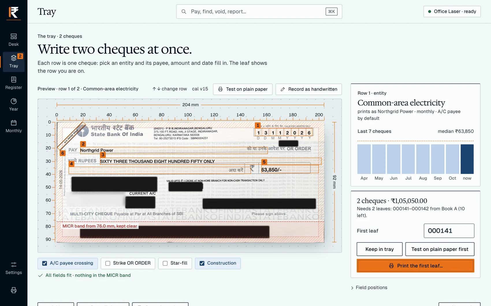
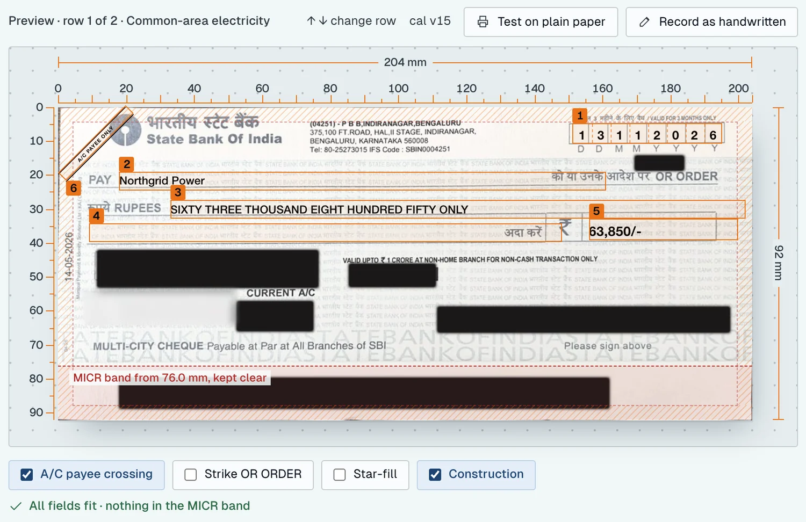
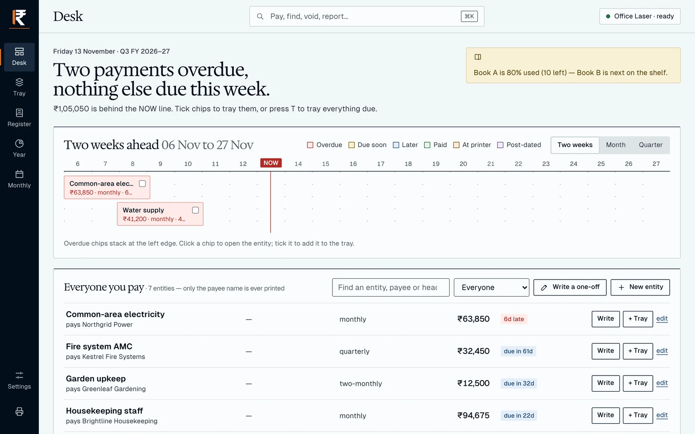
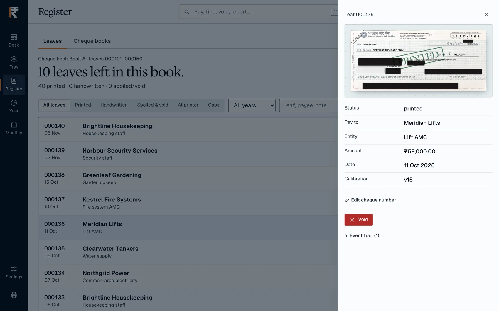
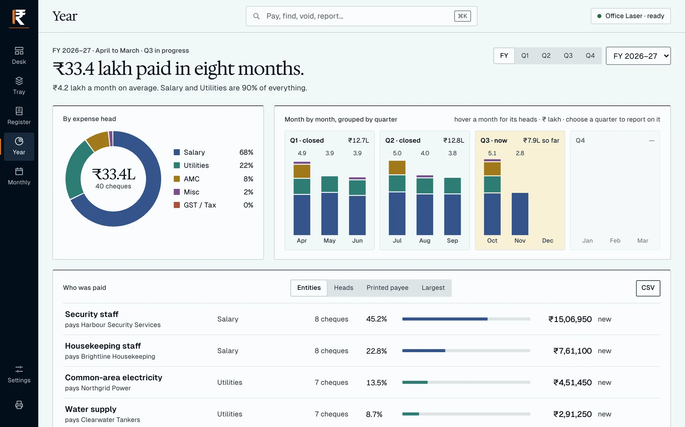

Cheques written, printed and logged.
A Mac app that leaves only the signature to do by hand.

A Mac app that leaves only the signature to do by hand.

Date, payee, amount and crossing land at millimetre positions measured for the leaf.

It learns which payments recur and how much, then shows what is overdue and coming.

Each leaf is recorded by cheque book: printed, handwritten, spoiled or void, with its trail.

Every payee, amount and leaf number shown here is invented.
By expense head, quarter and payee, with a monthly PDF and CSV exports.

Choose Skip on the first screen. Nothing else to set up.
Each name as it should print.
Hold it against a real leaf.
A batch waits on its first leaf.
Calibrated for a State Bank of India multi-city leaf on an HP LaserJet Pro MFP M126nw. No warranty: check every cheque.
For Apple silicon Macs. Signed and notarized. Free under Apache 2.0.